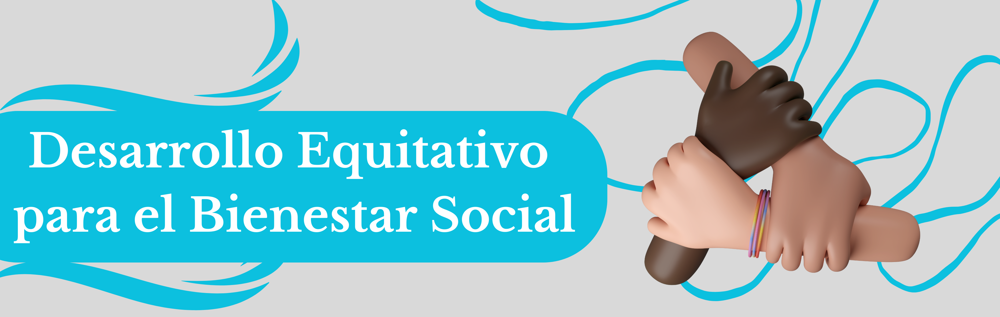

Portal de Transparencia y Participación Ciudadana de Otanche


Portal de Transparencia y Participación Ciudadana de Otanche
Objetivo General: Promover los métodos de resolución de conflictos y mejorar el sistema penitenciario con un enfoque de derechos humanos.
Proyectos y Acciones:
Objetivo General: Garantizar el acceso a servicios de salud y bienestar para toda la población.
Proyectos y Acciones:
Objetivo General: Fortalecer la calidad educativa y garantizar el acceso equitativo para todos los niveles.
Proyectos y Acciones:
Objetivo General: Promover la identidad cultural, el acceso a espacios artísticos y la inclusión cultural.
Proyectos y Acciones:
Objetivo General: Atender a la población en situación de vulnerabilidad, garantizando sus derechos y oportunidades.
Proyectos y Acciones:
Objetivo General: Promover la actividad física y el deporte inclusivo.
Proyectos y Acciones:
Objetivo General: Mejorar la convivencia ciudadana y fortalecer la seguridad pública.
Proyectos y Acciones: